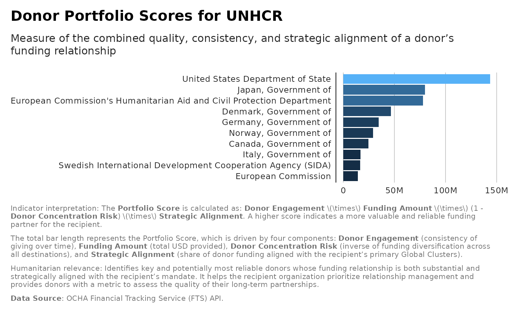
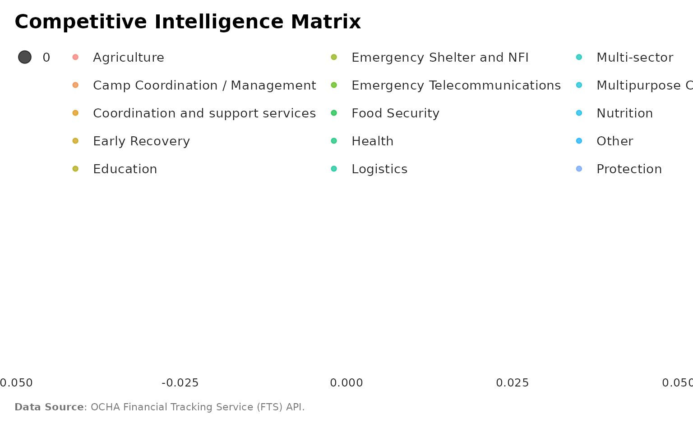
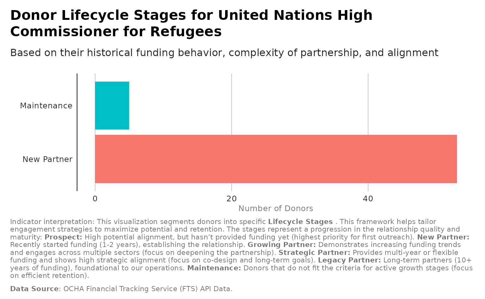
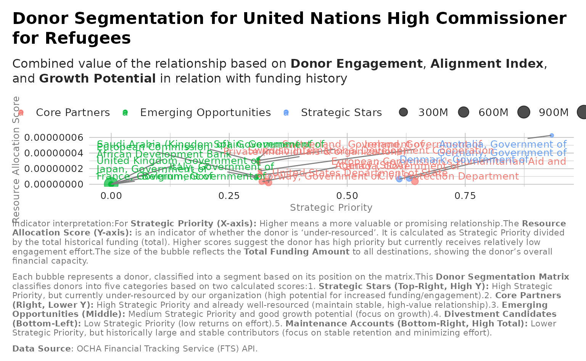
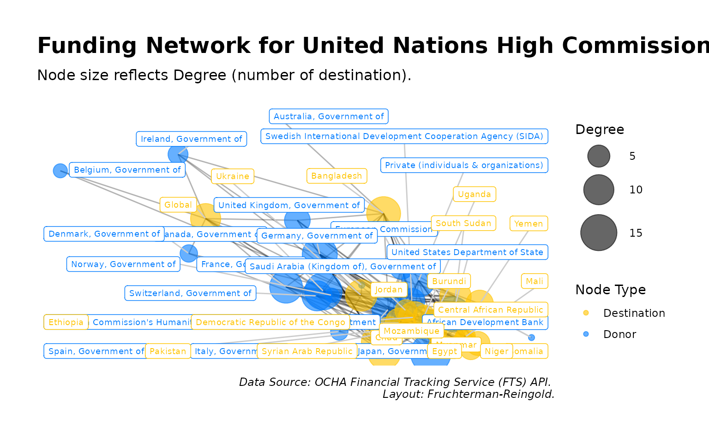

library(ftsAnalysis)
#> Registered S3 method overwritten by 'quantmod':
#> method from
#> as.zoo.data.frame zooanalysis_wordcloud_from_flows
analysis_wordcloud_from_flows(flows, facet_by_year = FALSE)
# Returns a named list of word cloud objects
yearly_clouds <- analysis_wordcloud_from_flows(flows, facet_by_year = TRUE)
#> Warning in max(dataOut$freq): no non-missing arguments to max; returning -Inf
#> Warning in max(dataOut$freq): no non-missing arguments to max; returning -Inf
#> Warning in max(dataOut$freq): no non-missing arguments to max; returning -Inf
#> Warning in max(dataOut$freq): no non-missing arguments to max; returning -Inf
#> Warning in max(dataOut$freq): no non-missing arguments to max; returning -Inf
# To view the cloud for a specific year
yearly_clouds[["2015"]]
yearly_clouds[["2024"]]
yearly_clouds[["2025"]]analysis_systemic_network_insights
network_insights <- analysis_systemic_network_insights(flows)
density_trend_data <- network_insights$Density_Trend
ggplot2::ggplot(network_insights$Density_Trend, ggplot2::aes(x = year, y = Density_by_Year)) +
ggplot2::geom_line(color = "#4361EE", size = 1.2) +
ggplot2::geom_point(color = "#4361EE", size = 3) +
ggplot2::geom_smooth(method = "lm", se = FALSE, linetype = "dashed",
color = "grey50") +
ggplot2::scale_y_continuous(labels = scales::percent,
limits = c(0,
max(network_insights$Density_Trend$Density_by_Year) * 1.1)) +
ggplot2::scale_x_continuous(breaks = unique(network_insights$Density_Trend$year)) +
ggplot2::labs(
title = "Evolution of Funding Network Connectivity (Donor-Recipient Density)",
subtitle = "Tracking the percentage of possible donor-recipient links that
were actually funded each year.",
x = "Year",
y = "Network Density (%)",
caption = paste0(
"Indicator interpretation:",
"This visualization tracks the **Network Density** of the funding ecosystem
over time. Density is a measure of **connectivity**: it represents the
percentage of all theoretically possible unique donor-to-recipient
relationships that actually received funding in a given year.
The dashed line shows the long-term trend.",
"\n\n",
"An **increasing density trend** suggests the ecosystem is becoming more
distributed and interconnected, which may reduce risk reliance on a few key
links. A **decreasing density trend** suggests the network is retracting or
consolidating.
This helps us assess the maturity and fragmentation of the funding system.",
"\n\n",
"**Data Source**: OCHA Financial Tracking Service (FTS) API.") ) +
unhcrthemes::theme_unhcr(
grid = "Y",
axis = TRUE,
axis_title = TRUE,
legend = FALSE
)
#> Warning: Using `size` aesthetic for lines was deprecated in ggplot2 3.4.0.
#> ℹ Please use `linewidth` instead.
#> This warning is displayed once every 8 hours.
#> Call `lifecycle::last_lifecycle_warnings()` to see where this warning was
#> generated.
#> `geom_smooth()` using formula = 'y ~ x'
analysis_portfolio_scores
scores <- analysis_portfolio_scores(flows,
recipient_name="United Nations High Commissioner for Refugees",
top_n = 10)
ggplot2::ggplot(scores, ggplot2::aes(x = reorder(donor, Portfolio_Score),
y = Portfolio_Score)) +
ggplot2::geom_col( ggplot2::aes(fill = Portfolio_Score)) +
ggplot2::coord_flip() +
ggplot2::labs(title = "Donor Portfolio Scores for UNHCR",
subtitle = "Measure of the combined quality, consistency, and strategic
alignment of a donor's funding relationship",
x = "Donor", y = "Portfolio Score",
caption = paste(
"Indicator interpretation:",
"The **Portfolio Score** is calculated as: **Donor Engagement** $\\times$
**Funding Amount** $\\times$ (1 - **Donor Concentration Risk**) $\\times$
**Strategic Alignment**. A higher score indicates a more valuable and
reliable funding partner for the recipient.",
"\n\n",
" The total bar
length represents the Portfolio Score, which is driven by four components:
**Donor Engagement** (consistency of giving over time), **Funding Amount**
(total USD provided), **Donor Concentration Risk** (inverse of funding
diversification across all destinations), and **Strategic Alignment**
(share of donor funding aligned with the recipient's primary Global
Clusters).",
"\n\n",
"Humanitarian relevance:",
"Identifies key and potentially most reliable donors whose funding
relationship is both substantial and strategically aligned with the
recipient's mandate. It helps the recipient organization prioritize
relationship management and provides donors with a metric to assess the
quality of their long-term partnerships.",
"\n\n",
"**Data Source**: OCHA Financial Tracking Service (FTS) API.")) +
ggplot2::scale_y_continuous(
labels = scales::label_number(scale_cut = scales::cut_short_scale())
) +
unhcrthemes::theme_unhcr(grid = "X", axis = "Y", axis_title = FALSE,
legend=FALSE) 
analysis_prepare_opportunity_dataset
crisis_keywords = c("refugees", "refugee","displacement", "displaced",
"returnees","idps",
"protection", "conflict", "vulnerable")
features <- analysis_prepare_opportunity_dataset( flows,
lookback_years = 3,
crisis_keywords = crisis_keywords)
#> Warning: There was 1 warning in `dplyr::summarise()`.
#> ℹ In argument: `max_cluster_share = max(cluster_share, na.rm = TRUE)`.
#> ℹ In group 347: `donor = "European Commission's Humanitarian Aid and Civil
#> Protection Department"`, `recipient = "Emergency Shelter and NFI"`, `year =
#> 2021`.
#> Caused by warning in `max()`:
#> ! no non-missing arguments to max; returning -Inf
# Filter for non-NA growth, arrange by descending growth, and take the top 5.
label_data_top <- features |>
dplyr::filter(!is.na(pct_growth)) |>
dplyr::arrange(dplyr::desc(pct_growth)) |>
dplyr::slice_head(n = 3) |>
dplyr::mutate(donor_wrapped = stringr::str_wrap(paste0(donor, " --> ",
recipient),
width = 45))
ggplot2::ggplot(features, ggplot2::aes(x = total_amount, y = pct_growth/100)) +
ggplot2::geom_point(alpha = 0.5) +
ggrepel::geom_text_repel( data = label_data_top,
ggplot2::aes(label = donor_wrapped),
size = 2.5, segment.color = 'grey50',
min.segment.length = 0, box.padding = 0.5 ) +
ggplot2::scale_x_log10(
labels = scales::label_number(scale_cut = scales::cut_short_scale())) +
ggplot2::scale_y_continuous(labels = scales::label_percent() ) +
ggplot2::labs(
title = "Funding Opportunity Analysis: Amount vs. Growth",
subtitle = paste0(
"Focusing on the following keywords within project description: ",
paste(crisis_keywords, collapse = ", ")
),
x = "Total Amount (log scale)",
y = "Percentage Growth",
caption= paste0(
"Indicator interpretation: Points in the top-right quadrant indicate
high-value future opportunities.", "\n\n",
"**Data Source**: OCHA Financial Tracking Service (FTS) API.")) +
unhcrthemes::theme_unhcr(grid = TRUE, axis = TRUE,
axis_title = TRUE, legend = TRUE)
#> Warning in ggplot2::scale_x_log10(labels = scales::label_number(scale_cut =
#> scales::cut_short_scale())): log-10 transformation introduced
#> infinite values.
#> Warning: Removed 6559 rows containing missing values or values outside the scale range
#> (`geom_point()`).
analysis_fit_opportunity_model
features <- analysis_prepare_opportunity_dataset(flows)
#> Warning: There was 1 warning in `dplyr::summarise()`.
#> ℹ In argument: `max_cluster_share = max(cluster_share, na.rm = TRUE)`.
#> ℹ In group 347: `donor = "European Commission's Humanitarian Aid and Civil
#> Protection Department"`, `recipient = "Emergency Shelter and NFI"`, `year =
#> 2021`.
#> Caused by warning in `max()`:
#> ! no non-missing arguments to max; returning -Inf
model_results <- analysis_fit_opportunity_model(features, min_year = NULL)
train_data <- model_results$train
model <- model_results$model
train_data$predicted_prob <- predict(model, newdata = train_data, type = "response")
ggplot2::ggplot(train_data,
ggplot2::aes(x = predicted_prob, fill = factor(opportunity))) +
ggplot2::geom_density(alpha = 0.5) +
ggplot2::scale_y_continuous(
labels = scales::label_number(scale_cut = scales::cut_short_scale())
) +
ggplot2::scale_x_continuous(
labels = scales::label_number(scale_cut = scales::cut_short_scale())
) +
ggplot2::labs(title = "Ability to forecast potential funding streams based on previous years",
subtitle = "Comparing the probability score assigned by the model against the
actual outcome \n (Funding Occurred = 1, No Funding = 0).",
x = "Predicted Probability",
fill = "Actual Opportunity",
caption = paste0("The X-axis shows the **Predicted Probability**
(a score from 0 to 1) that a donor will fund a recipient in the next year.
The two colored curves show the distribution of this score based on the
**Actual Outcome** for that relationship-year observation: **Blue Curve
(0: No Funding):** Represents relationships where the donor *did not* fund
the recipient next year. Most of these probabilities should cluster near 0.
**Red Curve (1: Funding Occurred):** Represents relationships where
the donor *did* fund the recipient next year.
Most of these probabilities should cluster near 1.",
"\n\n",
"**Data Source**: OCHA Financial Tracking Service (FTS) API.")) +
unhcrthemes::theme_unhcr(grid = TRUE, axis = TRUE, axis_title = TRUE, legend=TRUE) 
analysis_competitive_intel_matrix
recipient_name <- "United Nations High Commissioner for Refugees"
matrix_data <- analysis_competitive_intel_matrix(flows,
recipient_name,
peers = NULL)
ggplot2::ggplot(matrix_data, ggplot2::aes(x = market_share,
y = growth_differential)) +
ggplot2::geom_point(
ggplot2::aes(size = our_funding, color = sector), alpha = 0.7) +
ggplot2::geom_text(
ggplot2::aes(label = sector),
vjust = 1,
hjust = 1,
size = 3) +
ggplot2::scale_y_continuous(labels = scales::label_number(
scale_cut = scales::cut_short_scale())) +
ggplot2::scale_x_continuous(labels = scales::label_number(
scale_cut = scales::cut_short_scale())) +
ggplot2::labs(
title = "Competitive Intelligence Matrix",
x = "Market Share",
y = "Growth Differential",
size = "Our Funding",
caption ="**Data Source**: OCHA Financial Tracking Service (FTS) API.") +
unhcrthemes::theme_unhcr(
grid = FALSE,
axis = FALSE,
axis_title = FALSE,
legend = TRUE
)
#> Warning: Removed 21 rows containing missing values or values outside the scale range
#> (`geom_point()`).
#> Warning: Removed 21 rows containing missing values or values outside the scale range
#> (`geom_text()`).
analysis_donor_lifecycle_stage
recipient_name <- "United Nations High Commissioner for Refugees"
stages <- analysis_donor_lifecycle_stage(flows, recipient_name= recipient_name )
ggplot2::ggplot(stages, ggplot2::aes(x = stage)) +
ggplot2::geom_bar( ggplot2::aes(fill = stage)) +
ggplot2::coord_flip() +
ggplot2::labs(title = paste0("Donor Lifecycle Stages for ", recipient_name),
subtitle = "Based on their historical funding behavior, complexity
of partnership, and alignment",
x = "",
y = "Number of Donors",
caption = paste(
"Indicator interpretation:",
"This visualization segments donors into specific **Lifecycle Stages** .
This framework helps tailor engagement strategies to maximize potential
and retention. The stages represent a progression in the relationship
quality and maturity: ",
"**Prospect:** High potential alignment, but hasn't provided funding yet
(highest priority for first outreach). ",
" **New Partner:** Recently started funding (1-2 years), establishing the
relationship.",
" **Growing Partner:** Demonstrates increasing funding trends and engages
across multiple sectors (focus on deepening the partnership). ",
"**Strategic Partner:** Provides multi-year or flexible funding and shows
high strategic alignment (focus on co-design and long-term goals). ",
"**Legacy Partner:** Long-term partners (10+ years of funding),
foundational to our operations. ",
"**Maintenance:** Donors that do not fit the criteria for active
growth stages (focus on efficient retention).",
"\n\n",
"**Data Source**: OCHA Financial Tracking Service (FTS) API Data."
)) +
unhcrthemes::theme_unhcr(grid = "X", axis = "Y", axis_title = TRUE,
legend=FALSE) 
analysis_donor_segmentation
recipient_name <- "United Nations High Commissioner for Refugees"
segments <- analysis_donor_segmentation(flows, recipient_name)|>
dplyr::filter(!is.na(total)) |>
dplyr::arrange(desc(total)) |>
dplyr::slice_head(n = 20)
label_data_top_donors <- segments |>
dplyr::filter(!is.na(total)) |>
dplyr::arrange(desc(total)) |>
dplyr::slice_head(n = 20)|>
dplyr::mutate(donor = stringr::str_wrap(donor,
width = 45))
ggplot2::ggplot(segments, ggplot2::aes(x = Strategic_Priority,
y = Resource_Allocation_Score,
color = segment,
size = total)) +
ggplot2::geom_point(alpha = 0.7) +
ggrepel::geom_text_repel(
data = label_data_top_donors,
ggplot2::aes(label = donor),
size = 3.5,
segment.color = 'grey50',
min.segment.length = 0,
box.padding = 0.5,
max.overlaps = Inf ) +
ggplot2::scale_size_continuous(labels = scales::label_number(
scale_cut = scales::cut_short_scale())) +
ggplot2::scale_y_continuous(labels = scales::label_number(
scale_cut = scales::cut_short_scale()),
n.breaks = 5) +
ggplot2::scale_x_continuous(labels = scales::label_number(
scale_cut = scales::cut_short_scale())) +
ggplot2::labs(title = paste0("Donor Segmentation for ", recipient_name),
subtitle = "Combined value of the relationship based on
**Donor Engagement**, **Alignment Index**, and **Growth Potential** in
relation with funding history",
x = "Strategic Priority",
y = "Resource Allocation Score",
color = "Segment",
caption = paste0(
"Indicator interpretation:",
"For **Strategic Priority (X-axis):** Higher means a more valuable or
promising relationship.",
"The **Resource Allocation Score (Y-axis):** is an indicator of whether the
donor is 'under-resourced'. It is calculated as Strategic Priority divided
by the total historical funding (total). Higher scores suggest the donor has
high priority but currently receives relatively low engagement effort.",
"The size of the bubble reflects the **Total Funding Amount** to all
destinations, showing the donor's overall financial capacity.",
"\n\n",
"Each bubble represents a donor, classified into a segment based on its
position on the matrix.",
"This **Donor Segmentation Matrix** classifies donors into five categories
based on two calculated scores:",
"1. **Strategic Stars (Top-Right, High Y):** High Strategic Priority, but
currently under-resourced by our organization (high potential for increased
funding/engagement).",
"2. **Core Partners (Right, Lower Y):** High Strategic Priority and already
well-resourced (maintain stable, high-value relationship).",
"3. **Emerging Opportunities (Middle):** Medium Strategic Priority and good
growth potential (focus on growth).",
"4. **Divestment Candidates (Bottom-Left):** Low Strategic Priority
(low returns on effort).",
"5. **Maintenance Accounts (Bottom-Right, High Total):** Lower Strategic
Priority, but historically large and stable contributors (focus on stable
retention and minimizing effort).",
"\n\n",
"**Data Source**: OCHA Financial Tracking Service (FTS) API.")) +
unhcrthemes::theme_unhcr(grid = TRUE, axis = FALSE, axis_title = TRUE, legend=TRUE) 
analysis_funding_forecast
donor <- "Germany"
forecast_result <- analysis_funding_forecast(flows,
by = "donor",
name = donor)
ggplot2::autoplot(forecast_result$forecast) +
ggplot2::scale_y_continuous(labels = scales::label_number(
scale_cut = scales::cut_short_scale())) +
ggplot2::labs(title = paste0("Funding Forecast of monthly funding amounts from ",
donor),
subtitle= "Using an Autoregressive Integrated Moving Average time
series model (ARIMA).",
x = "Year",
y = "Funding Amount (USD)",
caption = paste0(
"Indicator interpretation:",
"The **dark line** represents the historical monthly funding data used for
training the model. The **lighter line** extending to the right shows
the **future forecast**.",
"\n\n",
"The **shaded areas** surrounding the forecast line represent
the **prediction intervals**: the **darker shade** is the 80% confidence
interval, and the **lighter shade** is the 95% confidence interval.
These areas indicate the likely range of future funding, showing the
uncertainty inherent in the forecast: the wider the shade,
the less certain the prediction.",
"\n\n",
"**Data Source**: OCHA Financial Tracking Service (FTS) API.")) +
unhcrthemes::theme_unhcr(grid = TRUE,
axis = FALSE,
axis_title = FALSE,
legend=TRUE) 
analysis_donor_network_metrics
recipient_name <- "United Nations High Commissioner for Refugees"
network_metrics <- analysis_donor_network_metrics(flows, recipient_name)
g <- network_metrics$graph
# Create a data frame for nodes, including the calculated degree
nodes_df_all <- tibble::tibble(name = igraph::V(g)$name) |>
dplyr::mutate(
# Get the type property added in the original setup
type = ifelse(name %in% network_metrics$donor_metrics$donor,
"Donor", "Destination"),
# Calculate degree for sizing and labeling
degree = igraph::degree(g, v = name)
)
# --- Prepare Node Data AND Compute Coordinates
# Create the layout object first to get the coordinates (x, y)
layout_data <- ggraph::create_layout(g,
layout = "fr") # Fruchterman-Reingold General networks
# layout = "circle")
# layout = "kk") #Kamada-Kawai Small to medium networks
# layout = "dr") # Davidson-Harel Finding a minimum-energy state;
# Filter the layout data to only include the nodes of interest,
# ensuring all necessary columns (x, y, name, type, degree) are present.
nodes_df_all_coords <- layout_data |>
dplyr::as_tibble() |>
dplyr::left_join(
nodes_df_all |> dplyr::select(name, type, degree),
by = "name"
) |>
dplyr::filter(!is.na(type)) # Filter out any non-donor/non-destination nodes
# --- Ggraph Plot ---
ggraph::ggraph(layout_data) + # Use the layout_data object here
# EDGES: Use geom_edge_fan (works seamlessly with layout_data)
ggraph::geom_edge_fan(ggplot2::aes(alpha = weight),
alpha = 0.3,
width = 0.5,
show.legend = FALSE) +
ggraph::geom_node_point(
ggplot2::aes(color = nodes_df_all_coords$type[match(name,
nodes_df_all_coords$name)],
size = nodes_df_all_coords$degree[match(name,
nodes_df_all_coords$name)]),
alpha = 0.6) +
# --- label ---
ggrepel::geom_label_repel(
data = nodes_df_all_coords,
ggplot2::aes(x = x, y = y, label = name, color = type),
inherit.aes = FALSE,
size = 2.5,
force = 2,
max.overlaps = Inf,
box.padding = 0.4,
segment.color = 'grey80',
show.legend = FALSE) +
ggplot2::scale_size_continuous(range = c(2, 15), name = "Degree") +
ggplot2::scale_color_manual(values = c("Donor" = "#007BFF",
"Destination" = "#FFC300"),
name = "Node Type") +
ggplot2::labs(
title = paste0("Funding Network for ", recipient_name),
subtitle = "Node size reflects Degree (number of destination).",
caption = "Data Source: OCHA Financial Tracking Service (FTS) API.
Layout: Fruchterman-Reingold."
) +
ggraph::theme_graph(
background = "white",
base_family = "sans"
)